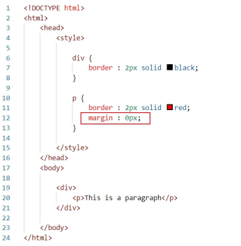

To understand, we need to create the content inside a div tag. This tag is
used to define a section or division in an HTML document.
Both p and div tags have border of 2px.
This is a paragraph.
The area between the red line and the black line is the margin for the p
tag. To set the margin in all directions, we can use the "margin" property.
Let's remove the default margin by setting its value to 0px.
There is no margin now.
This is a paragraph.
To set margin in a particular direction, we have four different properties:
"margin-top", "margin-bottom", "margin-right", and "margin-left".
Margin for top and bottom is 10px while it is 20px for left and right.
This is a paragraph.
The "margin" property is actually a shorthand property. We can also use the
"margin" property to set different margins for each direction.